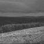
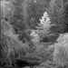
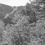
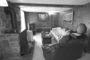
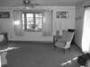
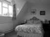
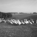
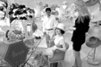

Project 4 / Scene Recognition with Bag of Words
This project's goal is to classify scenes into one of 15 categories by training and testing on the 15 scene databse. The recognition pipelines I used are listed below. The evaluation for each method is done by using confusion matrix, and the visualization of each method is done by producing a table of true positive, false positives and false negatives.
- Tiny images representation and nearest neighbor classifier
- Bag of SIFT representation and nearest neighbor classifier
- Bag of SIFT representation and linear SVM classifier
In this report, we will first explain how each algorithm are realized, and then we will discuss the performance of the three pipelines
Algorithms
Tiny images representation
This algorithm is pretty simple and straight forward,each image is resized to 16*16 resolutiion and then normalized to have zero mean and unit length. The matlab code is as below.
function image_feats = get_tiny_images(image_paths)
image_feats=zeros(size(image_paths,1),256);
for i=1:1:size(image_paths,1)
image=reshape(imresize(imread(image_paths{i}),[16 16]),256,1);
image=single(image);
image_feats(i,:)=mapstd(image);
end
Bag of SIFT representation
For this representaion, we need to first build a vocabulary using the training images with a special vocabulary size, in this assignment, I used the size 200. Using the SIFT_features proviede by vlfeat, we can substract the SIFT features of each image, and once we have enough number of SIFT features, we cluster them with kmeans, where k is our vocabulary size. Here, I only used a part of the training image to substract the SIFT features, the sample rate is 0.1, and the step size for the SIFT_features is set to 10. I also enabled the fast parameter to speed up the calculation. Matlab code for building vocabulary is shown below
function vocab = build_vocabulary( image_paths, vocab_size )
n=size(image_paths,1);
sampleratio=0.1;
stepsize=10;
sampleindex=randperm(n,floor(n*sampleratio));
X=[];
for i=sampleindex
image=single(imread(image_paths{i}));
[locations, SIFT_features] = vl_dsift(image,'fast','step',stepsize);
X=cat(2,X,SIFT_features);
end
X=single(X);
[vocab, assignments] = vl_kmeans(X, vocab_size);
Now we are ready to get bag of sifts. Here we construct SIFT features here in the same way as building the vocabulary, but here the sample rate is set as 1 because we need to get the histogram of vocabulary for all training image. For each training iamge, we calculates its SIFT features and compares each feature with our vocabulary to find the closest cluster center. And then we calculate the normalized histogram indicating how many time each cluaster was used for that picture. Here, the step size is set to 3 because we want to get a dense sampling to improve the performace. The matlab code is as below
function image_feats = get_bags_of_sifts(image_paths)
load('vocab.mat')
vocab_size = size(vocab, 2);
n=size(image_paths,1);
%sampleratio=1;
stepsize=3;
image_feats=zeros(n,vocab_size);
for i=1:1:n
image=single(imread(image_paths{i}));
[locations, SIFT_features] = vl_dsift(image,'fast','step',stepsize);
SIFT_features=single(SIFT_features);
D=vl_alldist2(SIFT_features,vocab);
feature_size=size(SIFT_features,2);
feature_hist=zeros(1,vocab_size);
for j=1:1:feature_size
min_dist=min(D(j,:));
feature_index=find(D(j,:)==min_dist);
feature_hist(1,feature_index)=feature_hist(1,feature_index)+1;
end
image_feats(i,:)=feature_hist/norm(feature_hist);
end
KNN classifier
For this classifier, I decided to use KNN classifier because it has a better performace than 1 nearest neighbor. We calculate the distances between the test image features and train image features, and we select the k features with the smallest distances. Then amoung these k features, we select the feature that appears the most. Then, the test image label is predicted as the train data's label related to that feature. Here, the K is set as 5. The matlab code is as blow
function predicted_categories = nearest_neighbor_classify(train_image_feats, train_labels, test_image_feats)
n=size(train_image_feats,1);
D=vl_alldist2(train_image_feats',test_image_feats');
predicted_categories=cell(n,1);
K=5;
for i=1:1:n
[Y,I]=sort(D(:,i));
predicted_labels=train_labels(I(1:K));
votes=0;
predicted_i='';
for j=1:1:K
new_votes=sum(strcmp(predicted_labels(j),predicted_labels));
if new_votes>votes
votes=new_votes;
predicted_i=predicted_labels(j);
end
end
predicted_categories(i)=predicted_i;
end
SVM classifier
For this classifier, we need to do a 1 vs all SVM. For each category, if the training data's label is equal to that category, we label it as 1, else -1. Then we train a SVM for recognizing that category only. And we do these for all the catogories. Then, for each testing data, we calculate the result of that test image on all SVMs we trained, and we pick the category whose SVM returns the highest value. Here, the lambda of the SVM needs to be tuned carefully, I observed that the training result is best when lambda is around 0.001, so that's what I will be using here for this project. The matlab code is as below
function predicted_categories = svm_classify(train_image_feats, train_labels, test_image_feats)
categories = unique(train_labels);
num_categories = length(categories);
num_features=size(train_image_feats,2);
n=size(train_image_feats,1);
lambda=0.001;
confidences=zeros(n,num_categories);
labels=zeros(n,num_categories);
for i=1:1:num_categories
for j=1:1:n
if strcmp(train_labels{j},categories{i})==1
labels(j,i)=1;
else
labels(j,i)=-1;
end
end
[W,B] = vl_svmtrain(train_image_feats', labels(:,i)', lambda);
for k=1:1:n
confidences(k,i)=W'*train_image_feats(k,:)'+B;
end
end
[C,I]=max(confidences,[],2);
predicted_categories=categories(I);
Performances
Tiny images representation and nearest neighbor classifier
Using Tiny images representation and nearest neighbor classifier, the classifier's performace is visualized as the confusion matrix below.
Scene classification results visualization, Tiny image representaion, KNN classifier(K=5)
Accuracy (mean of diagonal of confusion matrix) is 0.204
Bag of SIFT representation and nearest neighbor classifier
Using SIFT representation(Vocabulary building stepsize=10, samplerate=0.1, bag of sifts stepsize=3) and K nearest neighbor classifier(K=5), the classifier's performace is visualized as the confusion matrix below.
Scene classification results visualization, SIFT representaion, KNN classifier(K=5)
Accuracy (mean of diagonal of confusion matrix) is 0.561
Bag of SIFT representation and linear SVM classifier(best performace)
Using SIFT representation(Vocabulary building stepsize=10, samplerate=0.1, bag of sifts stepsize=3) and SVM classifier(lambda=0.001), the classifier's performace is visualized as the confusion matrix and table of classifier results below.
Scene classification results visualization

Accuracy (mean of diagonal of confusion matrix) is 0.723
| Category name | Accuracy | Sample training images | Sample true positives | False positives with true label | False negatives with wrong predicted label | ||||
|---|---|---|---|---|---|---|---|---|---|
| Bedroom | 0.460 |  |
 |
 |
LivingRoom |
Office |
 Office |
 Industrial |
|
| Coast | 0.820 |  |
 |
 OpenCountry |
OpenCountry |
 OpenCountry |
OpenCountry |
||
| Forest | 0.970 |  |  |
 |
 OpenCountry |
OpenCountry |
 Mountain |
Street |
|
| Highway | 0.760 |  |
Coast |
 LivingRoom |
 Mountain |
Coast |
|||
| Industrial | 0.640 |  |
 |
 Bedroom |
 Bedroom |
 InsideCity |
Highway |
||
| InsideCity | 0.810 |  |
 Kitchen |
 Store |
 Street |
 OpenCountry |
|||
| Kitchen | 0.710 |  |
 |
 |
 Bedroom |
 LivingRoom |
 Bedroom |
 Industrial |
|
| LivingRoom | 0.320 |  |
 |  |
 Bedroom |
 Bedroom |
Office |
 Suburb |
|
| Mountain | 0.880 |  |
 |
 TallBuilding |
Highway |
Forest |
Highway |
||
| Office | 0.950 |  |
Industrial |
LivingRoom |
 TallBuilding |
TallBuilding |
|||
| OpenCountry | 0.520 |  |
 |
 |
InsideCity |
Coast |
 Highway |
 Forest |
|
| Store | 0.310 |  | LivingRoom |
 LivingRoom |
InsideCity |
TallBuilding |
|||
| Street | 0.910 | Bedroom |
Store |
 Mountain |
 InsideCity |
||||
| Suburb | 0.980 |  |
 OpenCountry |
 LivingRoom |
Coast |
 Mountain |
|||
| TallBuilding | 0.800 |  |
 |
 |
 |
 Industrial |
 Kitchen |
InsideCity |
Street |
| Category name | Accuracy | Sample training images | Sample true positives | False positives with true label | False negatives with wrong predicted label | ||||
Discussion
Here I want to discuss the influence of the size of vocabulary on the performances. We take the experiment on bag of SIFT + 1 vs all linear SVM, which is the classifier with the best performance amoung the pipelines above. Set the Vocabulary size as 10,20,50,100,200, we have the confusion matrix as below:
The relationship between the vocabulary size and the accuracy can be shown as below